去噪扩散概率模型Denoising Diffusion Probabilistic Models
我们给出使用扩散概率模型做高质量图像合成的结果。扩散概率模型是一类受非平衡热力学启发的隐变量模型。我们最好的结果来自在一个加权变分下界上训练——该下界是依据扩散概率模型与带 Langevin 动力学的去噪得分匹配之间的新联系而设计的；并且我们的模型天然支持一种渐进式有损解压方案，它可以被看作自回归解码的推广。在无条件 CIFAR10 数据集上，我们取得 9.46 的 Inception 分数与 3.17 的最新最好 FID 分数。在 256×256 的 LSUN 上，我们取得与 ProgressiveGAN 相似的样本质量。我们的实现见 https://github.com/hojonathanho/diffusion。
正文、图表与参考文献均来自源 PDF 解析结果。专业术语、模型名、数据集名与人名按要求保留原文；术语上的金色虚线表示可悬停（触屏可点按）查看中文解释。参考文献整节保留英文原文不译。
1 引言
各种深度生成模型近来在多种数据模态上展示了高质量样本。生成对抗网络（GAN）、自回归模型、流模型与变分自编码器（VAE）合成了令人惊叹的图像与音频样本 [14, 27, 3, 58, 38, 25, 10, 32, 44, 57, 26, 33, 45]，而基于能量的建模与得分匹配也取得了显著进展，生成的图像可与 GAN 相媲美 [11, 55]。
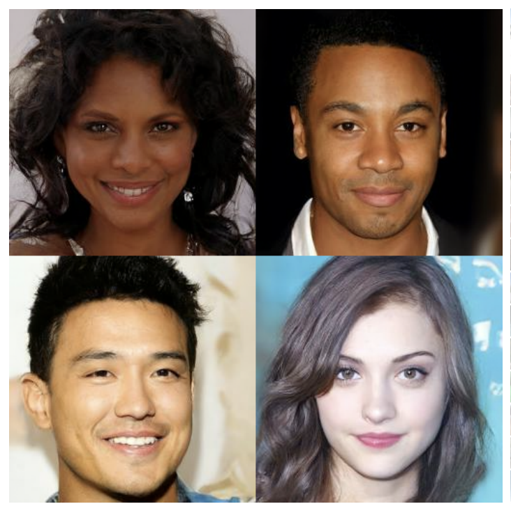
本文报告扩散概率模型 [53] 的进展。扩散概率模型（下文简称「扩散模型」）是一种参数化的马尔可夫链，用变分推断训练，以便在有限时间后产生与数据匹配的样本。这条链的转移被学习用来反转一个扩散过程；该扩散过程是一个马尔可夫链，它沿与采样相反的方向逐步向数据加入噪声，直到信号被破坏。当扩散由少量高斯噪声构成时，把采样链的转移也设为条件高斯就足够了，从而允许一种特别简单的神经网络参数化。
扩散模型定义直观、训练高效，但据我们所知，此前还没有工作证明它们能够生成高质量样本。我们表明扩散模型确实能够生成高质量样本，有时甚至优于其他类型生成模型已发表的结果（第 4 节）。此外，我们表明某种特定的扩散模型参数化揭示了它与训练时在多个噪声水平上的去噪得分匹配、以及采样时的退火 Langevin 动力学之间的等价性（3.2 节）[55, 61]。我们最好的样本质量结果正是用这一参数化得到的（4.2 节），因此我们把这一等价性视为我们的主要贡献之一。
尽管样本质量出色，我们的模型的对数似然与其他基于似然的模型相比并不具竞争力（不过我们的模型确实比用退火重要性采样为能量模型与得分匹配报告的大估计值更好 [11, 55]）。我们发现，我们模型的无损码长主要被用来描述难以察觉的图像细节（4.3 节）。我们用有损压缩的语言对这种现象做了更精细的分析，并表明扩散模型的采样过程是一种渐进解码，它类似于沿某个比特排序做自回归解码，而该排序极大地推广了自回归模型通常能做到的形式。
2 背景
扩散模型 [53] 是形如 pθ(x0) := ∫ pθ(x0:T) dx1:T 的隐变量模型，其中 x1, …, xT 是与数据 x0 ∼ q(x0) 同维度的隐变量。联合分布 pθ(x0:T) 称为反向过程（reverse process），它被定义为一个从 p(xT) = N(xT; 0, I) 出发、带可学习高斯转移的马尔可夫链：
扩散模型区别于其他类型隐变量模型之处在于：近似后验 q(x1:T | x0) 称为前向过程（forward process）或扩散过程，它被固定为一个按方差表 β1, …, βT 逐步向数据加入高斯噪声的马尔可夫链：
训练通过优化负对数似然的通常变分下界来完成：
前向过程方差 βt 可以像 [33] 那样通过重参数化学习，也可以作为超参数保持常数；反向过程的表达能力部分由 pθ(xt−1|xt) 中高斯条件分布的选择来保证，因为当 βt 很小时两个过程具有相同的函数形式 [53]。前向过程的一个显著性质是它允许在任意时间步 t 以闭式形式采样 xt：记 αt := 1 − βt、ᾱt := ∏s=1t αs，我们有
因此可以通过用随机梯度下降优化 L 的随机项来高效训练。进一步的改进来自把 L (3) 重写为如下形式而降低方差：
LT Lt−1 L0
（细节见附录 A。各项上的标记 LT、Lt−1、L0 在第 3 节中使用。）式 (5) 用 KL 散度直接比较 pθ(xt−1|xt) 与前向过程的后验；后者在以 x0 为条件时是可处理的：
公式变量说明：xt 是第 t 步的隐变量（与数据同维度）；βt 是第 t 步加入噪声的方差；αt = 1 − βt、ᾱt = ∏s≤t αs 是累积系数；N(·; μ, Σ) 表示高斯分布；DKL 是 KL 散度；式 (5) 的 LT、Lt−1、L0 分别是「末步与先验的偏差」「各步反向转移与真实后验的偏差」「最后一步的负对数似然」三项。
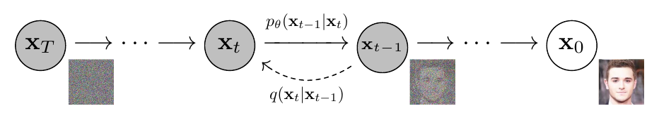
3 扩散模型与去噪自编码器
扩散模型看起来可能是一类受限的隐变量模型，但它们在实现上允许大量自由度。人们必须选择前向过程的方差 βt，以及反向过程的模型架构与高斯分布参数化。为指引这些选择，我们建立了扩散模型与去噪得分匹配之间的一个新而明确的联系（3.2 节），它导出一个简化、加权的变分下界目标（3.4 节）。最终，我们的模型设计由简洁性与实验结果证明其合理性（第 4 节）。我们的讨论按式 (5) 的各项来分类。
3.1 前向过程与 LT
我们忽略前向过程方差 βt 可通过重参数化学习这一事实，而把它们固定为常数（细节见第 4 节）。因此，在我们的实现中，近似后验 q 没有可学习参数，所以 LT 在训练期间是常数，可以忽略。
3.2 反向过程与 L1:T−1
现在我们讨论 pθ(xt−1|xt) = N(xt−1; μθ(xt, t), Σθ(xt, t))（1 < t ≤ T）中的选择。第一，我们把 Σθ(xt, t) = σt2 I 设为未经训练的时间相关常数。实验上，σt2 = βt 与 σt2 = β̃t = ((1 − ᾱt−1)/(1 − ᾱt)) βt 的结果相似。前一个选择对 x0 ∼ N(0, I) 最优，后一个对 x0 被确定性地设为一点最优。对具有逐坐标单位方差的数据，这两个选择是反向过程熵上界与下界对应的两个极端选择 [53]。
第二，为了表示均值 μθ(xt, t)，我们提出一个特定的参数化，其动机来自下面关于 Lt 的分析。取 pθ(xt−1|xt) = N(xt−1; μθ(xt, t), σt2I)，我们可以写出：
其中 C 是不依赖 θ 的常数。因此我们看到，μθ 最直接的参数化是让模型预测 μ̃t，即前向过程后验均值。不过，我们可以把式 (4) 重参数化为 xt(x0, ε) = √ᾱt x0 + √(1 − ᾱt) ε（ε ∼ N(0, I)）并代入前向过程后验公式 (7)，从而把式 (8) 进一步展开：
式 (10) 表明，给定 xt，μθ 必须预测 1√αt( xt − βt√(1 − ᾱt) ε )。由于 xt 作为输入对模型可见，我们可以选择如下参数化：
其中 εθ 是一个函数近似器，用来从 xt 预测 ε。要从 xt−1 ∼ pθ(xt−1|xt) 采样，就是计算 xt−1 = 1√αt( xt − βt√(1 − ᾱt) εθ(xt, t) ) + σt z，其中 z ∼ N(0, I)。完整的采样过程（算法 2）类似于以 εθ 作为学到的数据密度梯度的 Langevin 动力学。此外，在参数化 (11) 下，式 (10) 简化为：
它类似于在由 t 索引的多个噪声尺度上的去噪得分匹配 [55]。由于式 (12) 等于（类似 Langevin 的反向过程 (11) 的变分下界中的一项），我们看到：优化一个类似去噪得分匹配的目标，等价于用变分推断来拟合一个类似 Langevin 动力学的采样链的有限时间边缘分布。
总结一下，我们可以训练反向过程的均值函数近似器 μθ 去预测 μ̃t，或者通过修改其参数化，训练它去预测 ε。（也存在预测 x0 的可能，但我们发现这在实验早期会导致更差的样本质量。）我们已经表明，ε 预测参数化既类似 Langevin 动力学，又把扩散模型的变分下界简化为一个类似去噪得分匹配的目标。尽管如此，它只是 pθ(xt−1|xt) 的另一种参数化，因此我们在第 4 节用一个消融实验比较预测 ε 与预测 μ̃t，来验证它的有效性。
式 (8)–(12) 的变量：μ̃t 是「给定 x0 时前向过程在 t−1 步的后验均值」（式 7）；μθ 是模型给出的反向转移均值；ε 是生成 xt 时实际加入的标准高斯噪声；εθ 是网络对它的预测；σt2 是反向过程方差（取常数）；C 是与 θ 无关的常数。式 (12) 说明：只要让网络预测噪声 ε，训练目标就变成「预测噪声的均方误差」。
3.3 数据缩放、反向过程解码器与 L0
我们假设图像数据由 {0, 1, …, 255} 中的整数线性缩放到 [−1, 1] 构成。这确保神经网络反向过程在一致缩放的输入上运算，并从标准正态先验 p(xT) 出发。为获得离散对数似然，我们把反向过程的最后一项设为由高斯 N(x0; μθ(x1, 1), σ12I) 导出的独立离散解码器：
δ+(x) = { ∞ 若 x = 1；x + 1/255 若 x < 1 }， δ−(x) = { −∞ 若 x = −1；x − 1/255 若 x > −1 }
其中 D 是数据维度，上标 i 表示取出一个坐标。（改用更强的解码器例如条件自回归模型是很直接的，但我们把它留给未来工作。）与 VAE 解码器和自回归模型中使用的离散化连续分布 [34, 52] 类似，我们这里的选择确保变分下界是离散数据的无损码长，无需向数据添加噪声，也无需把缩放操作的雅可比项纳入对数似然。采样结束时，我们无噪声地输出 μθ(x1, 1)。
3.4 简化的训练目标
有了上面定义的反向过程与解码器，变分下界（由式 (12) 与 (13) 导出的各项组成）显然对 θ 可微，可以直接用于训练。然而，我们发现用下面这个变分下界的变体来训练对样本质量有益（也更便于实现）：
其中 t 在 1 与 T 之间均匀取值。t = 1 的情形对应 L0，其中离散解码器定义 (13) 中的积分用高斯概率密度函数乘以区间宽度近似，忽略 σ12 与边界效应。t > 1 的情形对应式 (12) 的一个不加权版本，类似于 NCSN 去噪得分匹配模型 [55] 所用的损失加权。（LT 不出现，因为前向过程方差 βt 是固定的。）算法 1 给出用这个简化目标的完整训练过程。
由于我们的简化目标 (14) 丢弃了式 (12) 中的加权，它是一个加权的变分下界，与标准变分下界 [18, 22] 相比强调重建的不同方面。特别地，我们在第 4 节的扩散过程设置使简化目标下调了 t 较小的损失项。这些项训练网络对噪声量很小的数据去噪，因此把它们下调是有益的，这样网络可以专注于更大的 t 项中更困难的去噪任务。我们将在实验中看到，这种重新加权带来更好的样本质量。
- repeat
- x0 ∼ q(x0)
- t ∼ Uniform({1, …, T})
- ε ∼ N(0, I)
- 对 ∇θ ‖ ε − εθ( √ᾱt x0 + √(1 − ᾱt) ε, t ) ‖2 取梯度下降步
- until 收敛
- xT ∼ N(0, I)
- for t = T, …, 1 do
- z ∼ N(0, I) 若 t > 1，否则 z = 0
- xt−1 = 1√αt( xt − 1 − αt√(1 − ᾱt) εθ(xt, t) ) + σt z
- end for
- return x0
4 实验
我们对所有实验设 T = 1000，使采样期间所需的神经网络求值次数与先前工作 [53, 55] 一致。我们把前向过程方差设为从 β1 = 10−4 到 βT = 0.02 线性递增的常数。这些常数相对缩放到 [−1, 1] 的数据取得很小，确保反向与前向过程具有近似相同的函数形式，同时让 xT 处的信噪比尽可能小（在我们的实验中 LT = DKL(q(xT|x0) ‖ N(0, I)) ≈ 10−5 比特/维）。
为表示反向过程，我们使用一个类似 unmasked PixelCNN++ [52, 48] 的 U-Net 主干，全程使用组归一化 [66]。参数在时间上共享，时间通过网络所用的 Transformer 正弦位置嵌入 [60] 指定给网络。我们在 16×16 特征图分辨率上使用自注意力 [63, 60]。细节见附录 B。
4.1 样本质量
表 1 给出 CIFAR10 上的 Inception 分数、FID 分数与负对数似然（无损码长）。凭借 3.17 的 FID 分数，我们的无条件模型取得比文献中大多数模型（包括类别条件模型）更好的样本质量。我们的 FID 分数按标准做法相对训练集计算；当我们相对测试集计算时，分数为 5.24，仍优于文献中许多训练集 FID 分数。
| 模型 | IS | FID | NLL 测试（训练） |
| 条件模型（Conditional） | |||
| EBM [11] | 8.30 | 37.9 | |
| JEM [17] | 8.76 | 38.4 | |
| BigGAN [3] | 9.22 | 14.73 | |
| StyleGAN2 + ADA (v1) [29] | 10.06 | 2.67 | |
| 无条件模型（Unconditional） | |||
| Diffusion (original) [53] | ≤ 5.40 | ||
| Gated PixelCNN [59] | 4.60 | 65.93 | 3.03 (2.90) |
| Sparse Transformer [7] | 2.80 | ||
| PixelIQN [43] | 5.29 | 49.46 | |
| EBM [11] | 6.78 | 38.2 | |
| NCSNv2 [56] | 31.75 | ||
| NCSN [55] | 8.87 ± 0.12 | 25.32 | |
| SNGAN [39] | 8.22 ± 0.05 | 21.7 | |
| SNGAN-DDLS [4] | 9.09 ± 0.10 | 15.42 | |
| StyleGAN2 + ADA (v1) [29] | 9.74 ± 0.05 | 3.26 | |
| 本文（L，固定各向同性 Σ） | 7.67 ± 0.13 | 13.51 | ≤ 3.70 (3.69) |
| 本文（Lsimple） | 9.46 ± 0.11 | 3.17 | ≤ 3.75 (3.72) |
表 1 CIFAR10 结果。NLL 以比特/维（bits/dim）计。
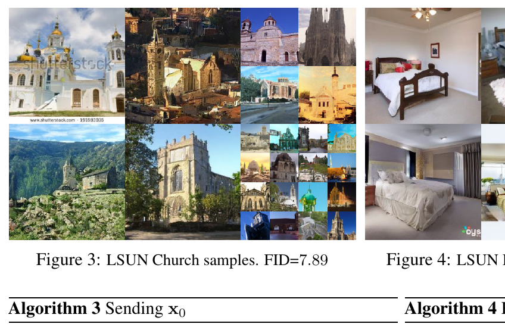
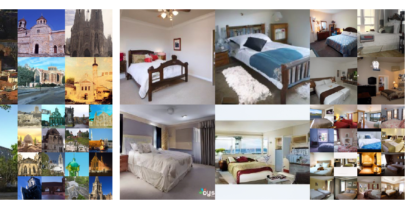
我们发现，在真实变分下界上训练我们的模型会得到比用简化目标训练更好的码长（符合预期），但后者带来最好的样本质量。CIFAR10 与 CelebA-HQ 256×256 样本见图 1，LSUN 256×256 样本见图 3 与图 4 [71]，更多见附录 D。
4.2 反向过程参数化与训练目标的消融
表 2 中我们给出反向过程参数化与训练目标对样本质量的影响（3.2 节）。我们发现，预测 μ̃ 的基线选项只在真实变分下界（而不是不加权的均方误差这类简化目标）上训练时才表现良好。我们还看到，学习反向过程方差（把参数化的对角 Σθ(xt) 纳入变分下界）会导致训练不稳定，样本质量也差于固定方差。如我们所提出的，预测 ε 在用固定方差、基于变分下界训练时表现与预测 μ̃ 大致相当，但在用我们的简化目标训练时要好得多。
| 目标 | IS | FID |
| μ 预测（基线） | ||
| L，学习对角 Σ | 7.28 ± 0.10 | 23.69 |
| L，固定各向同性 Σ | 8.06 ± 0.09 | 13.22 |
| ‖μ − μθ‖2 | - | - |
| ε 预测（本文） | ||
| L，学习对角 Σ | - | - |
| L，固定各向同性 Σ | 7.67 ± 0.13 | 13.51 |
| ‖ε − εθ‖2（Lsimple） | 9.46 ± 0.11 | 3.17 |
表 2 无条件 CIFAR10 上反向过程参数化与训练目标的消融。空白条目训练不稳定，生成的样本质量差且分数超出正常范围。
4.3 渐进式编码
表 1 也给出我们 CIFAR10 模型的码长。训练与测试之间的差距至多为 0.03 比特/维，与其他基于似然的模型报告的差距相当，表明我们的扩散模型没有过拟合（最近邻可视化见附录 D）。尽管如此，虽然我们的无损码长优于用退火重要性采样为能量模型与得分匹配报告的大估计值 [11]，但它们与其他类型的基于似然的生成模型 [7] 相比并不具竞争力。
既然我们的样本质量仍然很高，我们由此推断扩散模型具有一种归纳偏置，使其成为出色的有损压缩器。把变分下界各项 L1 + ⋯ + LT 视为码率、把 L0 视为失真，我们样本质量最高的 CIFAR10 模型码率为 1.78 比特/维、失真为 1.97 比特/维，相当于在 0 到 255 的尺度上均方根误差为 0.95。超过一半的无损码长描述的是难以察觉的失真。
渐进式有损压缩 我们可以通过引入一个形式与式 (5) 相同、刻意设计的渐进有损编码，进一步探查模型的率失真行为：见算法 3 与 4，它们假设可以使用一种诸如最小随机编码 [19, 20] 的过程，对任意分布 p 与 q、在接收者事先只知道 p 的条件下，用平均约 DKL(q(x) ‖ p(x)) 比特传输一个样本 x ∼ q(x)。当应用于 x0 ∼ q(x0) 时，算法 3 与 4 依次传输 xT, …, x0，总期望码长等于式 (5)。接收者在任意时刻 t 都完整掌握部分信息 xt，并可以渐进地估计：
这来自式 (4)。（随机重建 x0 ∼ pθ(x0|xt) 也是可行的，但我们这里不加以考虑，因为它使失真更难评估。）图 5 给出在 CIFAR10 测试集上得到的率失真图。在每个时刻 t，失真按均方根误差 √(‖x0 − x̂0‖2/D) 计算，码率按截至时刻 t 已接收的累计比特数计算。
- 用 p(xT) 发送 xT ∼ q(xT | x0)
- for t = T − 1, …, 2, 1 do
- 用 pθ(xt | xt+1) 发送 xt ∼ q(xt | xt+1, x0)
- end for
- 用 pθ(x0 | x1) 发送 x0
- 用 p(xT) 接收 xT
- for t = T − 1, …, 1, 0 do
- 用 pθ(xt | xt+1) 接收 xt
- end for
- return x0
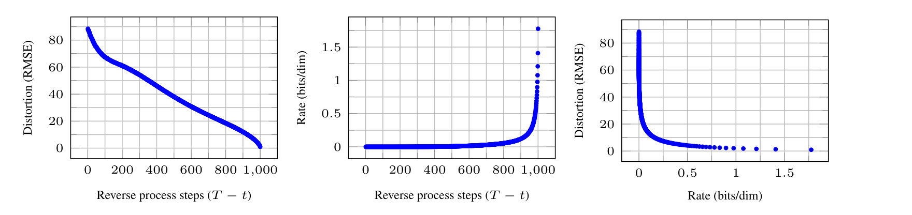
失真在率失真图的低码率区域陡峭下降，表明大部分比特确实被分配给了难以察觉的失真。
渐进式生成 我们还运行了一个由随机比特渐进解压得到的渐进式无条件生成过程。换句话说，我们在用算法 2 从反向过程采样时，预测反向过程的结果 x̂0。图 6 与图 10 给出 x̂0 在反向过程中随时间的样本质量。大尺度图像特征先出现，细节最后出现。图 7 给出在不同 t 上冻结 xt 的随机预测 x0 ∼ pθ(x0|xt)。当 t 很小时，除精细细节外都被保留；当 t 很大时，只保留大尺度特征。这或许就是「概念压缩」[18] 的迹象。
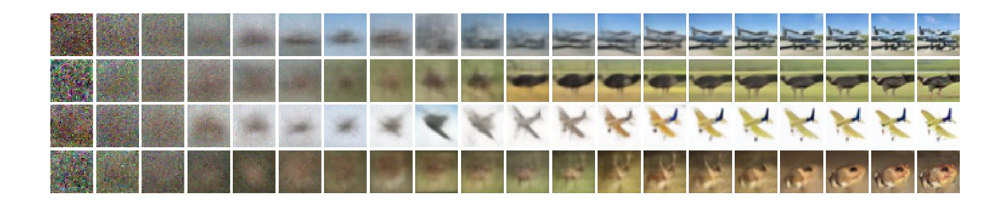
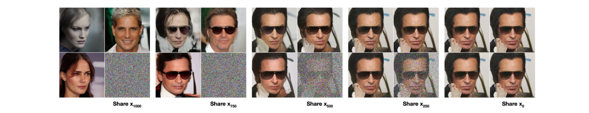
与自回归解码的联系 注意变分下界 (5) 可以改写为：
（推导见附录 A。）现在考虑把扩散过程长度 T 设为数据维度，定义前向过程使 q(xt|x0) 把所有概率质量放在前 t 个坐标被遮蔽的 x0 上（即 q(xt|xt−1) 遮蔽第 t 个坐标），把 p(xT) 设为把所有质量放在一张空白图像上，并且为了论证起见，取 pθ(xt−1|xt) 为完全表达能力的条件分布。在这些选择下，DKL(q(xT) ‖ p(xT)) = 0，而最小化 DKL(q(xt−1|xt) ‖ pθ(xt−1|xt)) 会训练 pθ 原样复制坐标 t+1, …, T，并在给定 t+1, …, T 的条件下预测第 t 个坐标。因此，用这个特定扩散训练 pθ 就是在训练一个自回归模型。
我们因此可以把高斯扩散模型 (2) 解释为一类带广义比特排序的自回归模型，而这种排序无法通过重排数据坐标来表达。先前工作表明，这类重排引入了对样本质量有影响的归纳偏置 [38]，因此我们推测高斯扩散起类似作用，而且效果可能更好，因为与遮蔽噪声相比，把高斯噪声加到图像上或许更自然。此外，高斯扩散的长度并不限于等于数据维度；例如我们实验中用的 T = 1000，小于 32×32×3 或 256×256×3 图像的维度。高斯扩散可以变短以快速采样，也可以变长以增强模型表达能力。
4.4 插值
我们可以用 q 作为随机编码器在隐空间中插值源图像 x0, x0′ ∼ q(x0)：xt, xt′ ∼ q(xt|x0)，然后把线性插值后的隐变量 x̄t = (1 − λ)x0 + λx0′ 用反向过程解码回图像空间：x̄0 ∼ p(x0|x̄t)。实际上，我们是用反向过程来消除「对源图像加噪版本做线性插值」带来的伪影，如图 8（左）所示。我们对不同的 λ 固定噪声，使 xt 与 xt′ 保持不变。图 8（右）给出对原始 CelebA-HQ 256×256 图像的插值与重建（t = 500）。反向过程产生了高质量的重建，以及合理、平滑变化属性（姿态、肤色、发型、表情与背景，但不包括眼镜）的插值。更大的 t 会产生更粗糙、更多样的插值，在 t = 1000 时给出全新样本（附录图 9）。
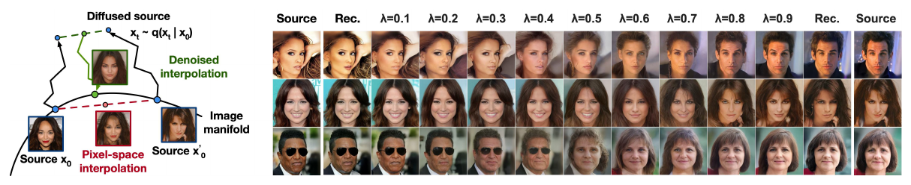
5 相关工作
虽然扩散模型可能看起来与流模型 [9, 46, 10, 32, 5, 16, 23] 与 VAE [33, 47, 37] 相似，但扩散模型的设计使 q 没有参数，且顶层隐变量 xT 与数据 x0 的互信息几乎为零。我们的 ε 预测反向过程参数化建立了扩散模型与「在多个噪声水平上用退火 Langevin 动力学采样的去噪得分匹配」之间的联系 [55, 56]。然而扩散模型支持直接的对数似然评估，并且训练过程用变分推断显式地训练 Langevin 动力学采样器（细节见附录 C）。这一联系的反向含义是：某种加权形式的去噪得分匹配等同于用变分推断训练一个类似 Langevin 的采样器。其他学习马尔可夫链转移算子的方法包括注入训练 [2]、变分走回 [15]、生成随机网络 [1] 等 [50, 54, 36, 42, 35, 65]。
借助得分匹配与基于能量的建模之间的已知联系，我们的工作可能对近期其他基于能量的模型工作有启示 [67–69, 12, 70, 13, 11, 41, 17, 8]。我们的率失真曲线是在一次变分下界评估中随时间计算的，这令人想起退火重要性采样一次运行中可以在不同失真惩罚下计算率失真曲线 [24]。我们的渐进解码论证可见于卷积 DRAW 及相关模型 [18, 40]，也可能导向更一般的子尺度排序设计或自回归模型的采样策略 [38, 64]。
6 结论
我们给出了使用扩散模型的高质量图像样本，并发现了扩散模型与以下各方面之间的联系：用于训练马尔可夫链的变分推断、去噪得分匹配与退火 Langevin 动力学（以及由此延伸的基于能量的模型）、自回归模型、渐进式有损压缩。由于扩散模型似乎对图像数据具有出色的归纳偏置，我们期待研究它在其他数据模态中的效用，以及作为其他类型生成模型与机器学习系统组件的价值。
更广泛的影响（Broader Impact）
我们关于扩散模型的工作与其他类型深度生成模型（例如提升 GAN、流模型、自回归模型等样本质量的努力）范围相近。本文代表扩散模型在这类技术家族中成为普遍有用工具的进展，因此它可能会放大生成模型对（以及将要产生的）更广泛世界的影响。
遗憾的是，生成模型有大量众所周知的恶意用途。样本生成技术可以被用来为政治目的制造知名人物的虚假图像与视频。虽然在没有软件工具的时代人们也早已手工制作假图像，但像我们这样的生成模型让这一过程更容易。幸运的是，CNN 生成的图像目前还有细微缺陷可供检测 [62]，但生成模型的改进可能使检测更困难。生成模型也会反映其训练数据中的偏见。由于许多大型数据集是通过自动化系统从互联网收集的，去除这些偏见可能很困难，尤其是在图像没有标注时。如果在这些数据集上训练的生成模型的样本在互联网上广泛传播，这些偏见只会被进一步强化。
另一方面，扩散模型可能对数据压缩有用；随着数据分辨率提高与全球互联网流量增长，这对确保互联网对广泛人群的可及性可能至关重要。我们的工作可能有助于在无标注原始数据上为从图像分类到强化学习的广泛下游任务做表示学习，扩散模型也可能在艺术、摄影与音乐创作中变得可行。
致谢与资助披露
本工作由 ONR PECASE 与 NSF 研究生研究奖学金（资助号 DGE-1752814）支持。Google 的 TensorFlow Research Cloud（TFRC）提供了 Cloud TPU。
参考文献
按要求，参考文献整节保留英文原文，未作翻译。
- Guillaume Alain, Yoshua Bengio, Li Yao, Jason Yosinski, Eric Thibodeau-Laufer, Saizheng Zhang, and Pascal Vincent. GSNs: generative stochastic networks. Information and Inference: A Journal of the IMA, 5(2):210–249, 2016.
- Florian Bordes, Sina Honari, and Pascal Vincent. Learning to generate samples from noise through infusion training. In International Conference on Learning Representations, 2017.
- Andrew Brock, Jeff Donahue, and Karen Simonyan. Large scale GAN training for high fidelity natural image synthesis. In International Conference on Learning Representations, 2019.
- Tong Che, Ruixiang Zhang, Jascha Sohl-Dickstein, Hugo Larochelle, Liam Paull, Yuan Cao, and Yoshua Bengio. Your GAN is secretly an energy-based model and you should use discriminator driven latent sampling. arXiv preprint arXiv:2003.06060, 2020.
- Tian Qi Chen, Yulia Rubanova, Jesse Bettencourt, and David K Duvenaud. Neural ordinary differential equations. In Advances in Neural Information Processing Systems, pages 6571–6583, 2018.
- Xi Chen, Nikhil Mishra, Mostafa Rohaninejad, and Pieter Abbeel. PixelSNAIL: An improved autoregressive generative model. In International Conference on Machine Learning, pages 863–871, 2018.
- Rewon Child, Scott Gray, Alec Radford, and Ilya Sutskever. Generating long sequences with sparse transformers. arXiv preprint arXiv:1904.10509, 2019.
- Yuntian Deng, Anton Bakhtin, Myle Ott, Arthur Szlam, and Marc'Aurelio Ranzato. Residual energy-based models for text generation. arXiv preprint arXiv:2004.11714, 2020.
- Laurent Dinh, David Krueger, and Yoshua Bengio. NICE: Non-linear independent components estimation. arXiv preprint arXiv:1410.8516, 2014.
- Laurent Dinh, Jascha Sohl-Dickstein, and Samy Bengio. Density estimation using Real NVP. arXiv preprint arXiv:1605.08803, 2016.
- Yilun Du and Igor Mordatch. Implicit generation and modeling with energy based models. In Advances in Neural Information Processing Systems, pages 3603–3613, 2019.
- Ruiqi Gao, Yang Lu, Junpei Zhou, Song-Chun Zhu, and Ying Nian Wu. Learning generative ConvNets via multi-grid modeling and sampling. In Proceedings of the IEEE Conference on Computer Vision and Pattern Recognition, pages 9155–9164, 2018.
- Ruiqi Gao, Erik Nijkamp, Diederik P Kingma, Zhen Xu, Andrew M Dai, and Ying Nian Wu. Flow contrastive estimation of energy-based models. In Proceedings of the IEEE/CVF Conference on Computer Vision and Pattern Recognition, pages 7518–7528, 2020.
- Ian Goodfellow, Jean Pouget-Abadie, Mehdi Mirza, Bing Xu, David Warde-Farley, Sherjil Ozair, Aaron Courville, and Yoshua Bengio. Generative adversarial nets. In Advances in Neural Information Processing Systems, pages 2672–2680, 2014.
- Anirudh Goyal, Nan Rosemary Ke, Surya Ganguli, and Yoshua Bengio. Variational walkback: Learning a transition operator as a stochastic recurrent net. In Advances in Neural Information Processing Systems, pages 4392–4402, 2017.
- Will Grathwohl, Ricky T. Q. Chen, Jesse Bettencourt, and David Duvenaud. FFJORD: Free-form continuous dynamics for scalable reversible generative models. In International Conference on Learning Representations, 2019.
- Will Grathwohl, Kuan-Chieh Wang, Joern-Henrik Jacobsen, David Duvenaud, Mohammad Norouzi, and Kevin Swersky. Your classifier is secretly an energy based model and you should treat it like one. In International Conference on Learning Representations, 2020.
- Karol Gregor, Frederic Besse, Danilo Jimenez Rezende, Ivo Danihelka, and Daan Wierstra. Towards conceptual compression. In Advances In Neural Information Processing Systems, pages 3549–3557, 2016.
- Prahladh Harsha, Rahul Jain, David McAllester, and Jaikumar Radhakrishnan. The communication complexity of correlation. In Twenty-Second Annual IEEE Conference on Computational Complexity (CCC'07), pages 10–23. IEEE, 2007.
- Marton Havasi, Robert Peharz, and José Miguel Hernández-Lobato. Minimal random code learning: Getting bits back from compressed model parameters. In International Conference on Learning Representations, 2019.
- Martin Heusel, Hubert Ramsauer, Thomas Unterthiner, Bernhard Nessler, and Sepp Hochreiter. GANs trained by a two time-scale update rule converge to a local Nash equilibrium. In Advances in Neural Information Processing Systems, pages 6626–6637, 2017.
- Irina Higgins, Loic Matthey, Arka Pal, Christopher Burgess, Xavier Glorot, Matthew Botvinick, Shakir Mohamed, and Alexander Lerchner. beta-VAE: Learning basic visual concepts with a constrained variational framework. In International Conference on Learning Representations, 2017.
- Jonathan Ho, Xi Chen, Aravind Srinivas, Yan Duan, and Pieter Abbeel. Flow++: Improving flow-based generative models with variational dequantization and architecture design. In International Conference on Machine Learning, 2019.
- Sicong Huang, Alireza Makhzani, Yanshuai Cao, and Roger Grosse. Evaluating lossy compression rates of deep generative models. In International Conference on Machine Learning, 2020.
- Nal Kalchbrenner, Aaron van den Oord, Karen Simonyan, Ivo Danihelka, Oriol Vinyals, Alex Graves, and Koray Kavukcuoglu. Video pixel networks. In International Conference on Machine Learning, pages 1771–1779, 2017.
- Nal Kalchbrenner, Erich Elsen, Karen Simonyan, Seb Noury, Norman Casagrande, Edward Lockhart, Florian Stimberg, Aaron van den Oord, Sander Dieleman, and Koray Kavukcuoglu. Efficient neural audio synthesis. In International Conference on Machine Learning, pages 2410–2419, 2018.
- Tero Karras, Timo Aila, Samuli Laine, and Jaakko Lehtinen. Progressive growing of GANs for improved quality, stability, and variation. In International Conference on Learning Representations, 2018.
- Tero Karras, Samuli Laine, and Timo Aila. A style-based generator architecture for generative adversarial networks. In Proceedings of the IEEE Conference on Computer Vision and Pattern Recognition, pages 4401–4410, 2019.
- Tero Karras, Miika Aittala, Janne Hellsten, Samuli Laine, Jaakko Lehtinen, and Timo Aila. Training generative adversarial networks with limited data. arXiv preprint arXiv:2006.06676v1, 2020.
- Tero Karras, Samuli Laine, Miika Aittala, Janne Hellsten, Jaakko Lehtinen, and Timo Aila. Analyzing and improving the image quality of StyleGAN. In Proceedings of the IEEE/CVF Conference on Computer Vision and Pattern Recognition, pages 8110–8119, 2020.
- Diederik P Kingma and Jimmy Ba. Adam: A method for stochastic optimization. In International Conference on Learning Representations, 2015.
- Diederik P Kingma and Prafulla Dhariwal. Glow: Generative flow with invertible 1x1 convolutions. In Advances in Neural Information Processing Systems, pages 10215–10224, 2018.
- Diederik P Kingma and Max Welling. Auto-encoding variational Bayes. arXiv preprint arXiv:1312.6114, 2013.
- Diederik P Kingma, Tim Salimans, Rafal Jozefowicz, Xi Chen, Ilya Sutskever, and Max Welling. Improved variational inference with inverse autoregressive flow. In Advances in Neural Information Processing Systems, pages 4743–4751, 2016.
- John Lawson, George Tucker, Bo Dai, and Rajesh Ranganath. Energy-inspired models: Learning with sampler-induced distributions. In Advances in Neural Information Processing Systems, pages 8501–8513, 2019.
- Daniel Levy, Matt D. Hoffman, and Jascha Sohl-Dickstein. Generalizing Hamiltonian Monte Carlo with neural networks. In International Conference on Learning Representations, 2018.
- Lars Maaløe, Marco Fraccaro, Valentin Liévin, and Ole Winther. BIVA: A very deep hierarchy of latent variables for generative modeling. In Advances in Neural Information Processing Systems, pages 6548–6558, 2019.
- Jacob Menick and Nal Kalchbrenner. Generating high fidelity images with subscale pixel networks and multidimensional upscaling. In International Conference on Learning Representations, 2019.
- Takeru Miyato, Toshiki Kataoka, Masanori Koyama, and Yuichi Yoshida. Spectral normalization for generative adversarial networks. In International Conference on Learning Representations, 2018.
- Alex Nichol. VQ-DRAW: A sequential discrete VAE. arXiv preprint arXiv:2003.01599, 2020.
- Erik Nijkamp, Mitch Hill, Tian Han, Song-Chun Zhu, and Ying Nian Wu. On the anatomy of MCMC-based maximum likelihood learning of energy-based models. arXiv preprint arXiv:1903.12370, 2019.
- Erik Nijkamp, Mitch Hill, Song-Chun Zhu, and Ying Nian Wu. Learning non-convergent non-persistent short-run MCMC toward energy-based model. In Advances in Neural Information Processing Systems, pages 5233–5243, 2019.
- Georg Ostrovski, Will Dabney, and Remi Munos. Autoregressive quantile networks for generative modeling. In International Conference on Machine Learning, pages 3936–3945, 2018.
- Ryan Prenger, Rafael Valle, and Bryan Catanzaro. WaveGlow: A flow-based generative network for speech synthesis. In ICASSP 2019-2019 IEEE International Conference on Acoustics, Speech and Signal Processing (ICASSP), pages 3617–3621. IEEE, 2019.
- Ali Razavi, Aaron van den Oord, and Oriol Vinyals. Generating diverse high-fidelity images with VQ-VAE-2. In Advances in Neural Information Processing Systems, pages 14837–14847, 2019.
- Danilo Rezende and Shakir Mohamed. Variational inference with normalizing flows. In International Conference on Machine Learning, pages 1530–1538, 2015.
- Danilo Jimenez Rezende, Shakir Mohamed, and Daan Wierstra. Stochastic backpropagation and approximate inference in deep generative models. In International Conference on Machine Learning, pages 1278–1286, 2014.
- Olaf Ronneberger, Philipp Fischer, and Thomas Brox. U-Net: Convolutional networks for biomedical image segmentation. In International Conference on Medical Image Computing and Computer-Assisted Intervention, pages 234–241. Springer, 2015.
- Tim Salimans and Durk P Kingma. Weight normalization: A simple reparameterization to accelerate training of deep neural networks. In Advances in Neural Information Processing Systems, pages 901–909, 2016.
- Tim Salimans, Diederik Kingma, and Max Welling. Markov Chain Monte Carlo and variational inference: Bridging the gap. In International Conference on Machine Learning, pages 1218–1226, 2015.
- Tim Salimans, Ian Goodfellow, Wojciech Zaremba, Vicki Cheung, Alec Radford, and Xi Chen. Improved techniques for training gans. In Advances in Neural Information Processing Systems, pages 2234–2242, 2016.
- Tim Salimans, Andrej Karpathy, Xi Chen, and Diederik P Kingma. PixelCNN++: Improving the PixelCNN with discretized logistic mixture likelihood and other modifications. In International Conference on Learning Representations, 2017.
- Jascha Sohl-Dickstein, Eric Weiss, Niru Maheswaranathan, and Surya Ganguli. Deep unsupervised learning using nonequilibrium thermodynamics. In International Conference on Machine Learning, pages 2256–2265, 2015.
- Jiaming Song, Shengjia Zhao, and Stefano Ermon. A-NICE-MC: Adversarial training for MCMC. In Advances in Neural Information Processing Systems, pages 5140–5150, 2017.
- Yang Song and Stefano Ermon. Generative modeling by estimating gradients of the data distribution. In Advances in Neural Information Processing Systems, pages 11895–11907, 2019.
- Yang Song and Stefano Ermon. Improved techniques for training score-based generative models. arXiv preprint arXiv:2006.09011, 2020.
- Aaron van den Oord, Sander Dieleman, Heiga Zen, Karen Simonyan, Oriol Vinyals, Alex Graves, Nal Kalchbrenner, Andrew Senior, and Koray Kavukcuoglu. WaveNet: A generative model for raw audio. arXiv preprint arXiv:1609.03499, 2016.
- Aaron van den Oord, Nal Kalchbrenner, and Koray Kavukcuoglu. Pixel recurrent neural networks. International Conference on Machine Learning, 2016.
- Aaron van den Oord, Nal Kalchbrenner, Oriol Vinyals, Lasse Espeholt, Alex Graves, and Koray Kavukcuoglu. Conditional image generation with PixelCNN decoders. In Advances in Neural Information Processing Systems, pages 4790–4798, 2016.
- Ashish Vaswani, Noam Shazeer, Niki Parmar, Jakob Uszkoreit, Llion Jones, Aidan N Gomez, Łukasz Kaiser, and Illia Polosukhin. Attention is all you need. In Advances in Neural Information Processing Systems, pages 5998–6008, 2017.
- Pascal Vincent. A connection between score matching and denoising autoencoders. Neural Computation, 23(7):1661–1674, 2011.
- Sheng-Yu Wang, Oliver Wang, Richard Zhang, Andrew Owens, and Alexei A Efros. Cnn-generated images are surprisingly easy to spot...for now. In Proceedings of the IEEE Conference on Computer Vision and Pattern Recognition, 2020.
- Xiaolong Wang, Ross Girshick, Abhinav Gupta, and Kaiming He. Non-local neural networks. In Proceedings of the IEEE Conference on Computer Vision and Pattern Recognition, pages 7794–7803, 2018.
- Auke J Wiggers and Emiel Hoogeboom. Predictive sampling with forecasting autoregressive models. arXiv preprint arXiv:2002.09928, 2020.
- Hao Wu, Jonas Köhler, and Frank Noé. Stochastic normalizing flows. arXiv preprint arXiv:2002.06707, 2020.
- Yuxin Wu and Kaiming He. Group normalization. In Proceedings of the European Conference on Computer Vision (ECCV), pages 3–19, 2018.
- Jianwen Xie, Yang Lu, Song-Chun Zhu, and Yingnian Wu. A theory of generative convnet. In International Conference on Machine Learning, pages 2635–2644, 2016.
- Jianwen Xie, Song-Chun Zhu, and Ying Nian Wu. Synthesizing dynamic patterns by spatial-temporal generative convnet. In Proceedings of the IEEE Conference on Computer Vision and Pattern Recognition, pages 7093–7101, 2017.
- Jianwen Xie, Zilong Zheng, Ruiqi Gao, Wenguan Wang, Song-Chun Zhu, and Ying Nian Wu. Learning descriptor networks for 3d shape synthesis and analysis. In Proceedings of the IEEE Conference on Computer Vision and Pattern Recognition, pages 8629–8638, 2018.
- Jianwen Xie, Song-Chun Zhu, and Ying Nian Wu. Learning energy-based spatial-temporal generative convnets for dynamic patterns. IEEE Transactions on Pattern Analysis and Machine Intelligence, 2019.
- Fisher Yu, Yinda Zhang, Shuran Song, Ari Seff, and Jianxiong Xiao. LSUN: Construction of a large-scale image dataset using deep learning with humans in the loop. arXiv preprint arXiv:1506.03365, 2015.
- Sergey Zagoruyko and Nikos Komodakis. Wide residual networks. arXiv preprint arXiv:1605.07146, 2016.
附录 A 扩展推导
下面给出式 (5)（扩散模型的降方差变分下界）的推导。该材料来自 Sohl-Dickstein et al. [53]；我们为完整性而收录于此。
下面给出 L 的另一个版本。它不易估计，但对我们 4.3 节的讨论有用。
附录 B 实验细节
我们的神经网络架构沿用 PixelCNN++ [52] 的主干，即基于 Wide ResNet [72] 的 U-Net [48]。我们把权重归一化 [49] 替换为组归一化 [66] 以简化实现。我们的 32×32 模型使用四个特征图分辨率（32×32 到 4×4），256×256 模型使用六个。所有模型在每个分辨层级有两个卷积残差块，并在 16×16 分辨率的卷积块之间插入自注意力块 [6]。扩散时间 t 通过把 Transformer 正弦位置嵌入 [60] 加到每个残差块中来指定。我们的 CIFAR10 模型有 3570 万参数，LSUN 与 CelebA-HQ 模型有 1.14 亿参数。我们还通过增加滤波器数量训练了一个约 2.56 亿参数的更大 LSUN Bedroom 变体。
我们对所有实验使用 TPU v3-8（类似 8 块 V100 GPU）。我们的 CIFAR 模型在批量大小 128 时以每秒 21 步训练（训练到 800k 步完成需 10.6 小时），采样一批 256 张图像需要 17 秒。我们的 CelebA-HQ/LSUN（256²）模型在批量大小 64 时以每秒 2.2 步训练，采样一批 128 张图像需要 300 秒。我们训练 CelebA-HQ 0.5M 步、LSUN Bedroom 2.4M 步、LSUN Cat 1.8M 步、LSUN Church 1.2M 步。更大的 LSUN Bedroom 模型训练了 1.15M 步。
除了早期为让网络规模适应内存限制而做的初始超参数选择之外，我们大部分超参数搜索是为了优化 CIFAR10 样本质量，然后把得到的设定迁移到其他数据集：
- 我们从常数、线性与二次调度中选择了 βt 调度，都约束为 LT ≈ 0。我们在不搜索的情况下设 T = 1000，并选择从 β1 = 10−4 到 βT = 0.02 的线性调度。
- 我们通过在 0.1、0.2、0.3、0.4 上搜索，把 CIFAR10 的 dropout 率设为 0.1。在 CIFAR10 上不用 dropout 时，我们得到较差的样本，类似于未正则化的 PixelCNN++ [52] 中的过拟合伪影。其他数据集的 dropout 率我们设为 0，未做搜索。
- 我们在 CIFAR10 训练中使用随机水平翻转；我们尝试了加与不加翻转，发现翻转能略微改善样本质量。除 LSUN Bedroom 外的所有其他数据集也使用随机水平翻转。
- 我们在实验早期比较了 Adam [31] 与 RMSProp，选择了前者。超参数保持标准值。我们在不做搜索的情况下把学习率设为 2×10−4，并对 256×256 图像把它降到 2×10−5，因为用较大的学习率训练似乎不稳定。
- 我们把 CIFAR10 的批量大小设为 128，更大图像设为 64。我们没有对这些值做搜索。
- 我们对模型参数使用衰减因子 0.9999 的 EMA。我们没有对这个值做搜索。
最终实验只训练一次，并在训练过程中持续评估样本质量。样本质量分数与对数似然报告的是训练过程中最小的 FID 值。在 CIFAR10 上，我们分别用 OpenAI [51] 与 TTUR [21] 仓库的原始代码在 50000 个样本上计算 Inception 与 FID 分数。在 LSUN 上，我们用 StyleGAN2 [30] 仓库的代码在 50000 个样本上计算 FID 分数。CIFAR10 与 CelebA-HQ 按 TensorFlow Datasets（https://www.tensorflow.org/datasets）提供的方式加载，LSUN 用 StyleGAN 的代码准备。数据集划分（或缺少划分）沿用把它们引入生成建模语境的那些论文的标准做法。所有细节都可以在源码发布中找到。
附录 C 关于相关工作的讨论
我们的模型架构、前向过程定义与先验与 NCSN [55, 56] 在细微但重要的方面不同，这些差异改善了样本质量；值得注意的是，我们直接把采样器作为隐变量模型训练，而不是在训练完成后事后添加它。更详细地说：
- 我们使用带自注意力的 U-Net；NCSN 使用带膨胀卷积的 RefineNet。我们通过加入 Transformer 正弦位置嵌入让所有层都以 t 为条件，而不是只在归一化层（NCSNv1）或只在输出（v2）中。
- 扩散模型在前向过程的每一步都把数据缩小（乘 √(1 − βt) 因子），使加入噪声时方差不会增长，从而给神经网络反向过程提供一致缩放的输入。NCSN 省略了这一缩放因子。
- 与 NCSN 不同，我们的前向过程会破坏信号（DKL(q(xT|x0) ‖ N(0, I)) ≈ 0），确保先验与 xT 的聚合后验高度匹配。同样不同于 NCSN 的是，我们的 βt 非常小，这确保前向过程可以被一个带条件高斯的马尔可夫链逆转。这两个因素都防止采样时的分布偏移。
- 我们类似 Langevin 的采样器的系数（学习率、噪声尺度等）都从正向过程中的 βt 严格导出。因此我们的训练过程直接训练采样器在 T 步后匹配数据分布：它用变分推断把采样器当作隐变量模型来训练。相比之下，NCSN 的采样器系数是事后手工设定的，其训练过程不能保证直接优化采样器的质量指标。
附录 D 样本
更多样本 图 11、13、16、17、18 与 19 给出在 CelebA-HQ、CIFAR10 与 LSUN 数据集上训练的扩散模型的未经挑选的样本。
隐结构与反向过程的随机性 采样时，先验 xT ∼ N(0, I) 与 Langevin 动力学都是随机的。为理解第二个噪声来源的重要性，我们在 CelebA 256×256 数据集上对同一中间隐变量采样了多张图像。图 7 给出共享隐变量 xt（t ∈ {1000, 750, 500, 250}）时反向过程 x0 ∼ pθ(x0|xt) 的多次抽样。为做到这一点，我们从先验的一次初始抽样出发运行单条反向链。在中间时间步，我们把这条链分叉以采样多张图像。当链在先验抽样之后、xT=1000 处分叉时，样本差异很大。然而当链在更多步之后分叉时，样本会共享高层属性，如性别、发色、是否戴眼镜、饱和度、姿态与面部表情。这表明像 x750 这样的中间隐变量编码了这些属性，尽管它们难以察觉。
从粗到细的插值 图 9 给出在一对源 CelebA 256×256 图像之间、改变隐空间插值之前的扩散步数所得到的插值。增加扩散步数会破坏源图像中更多的结构，而这些结构由模型在反向过程中补全。这使我们可以做细粒度与粗粒度两种插值。在 0 步扩散的极限情况下，插值在像素空间混合源图像。另一方面，在 1000 步扩散之后，源信息已经丢失，插值成为全新样本。
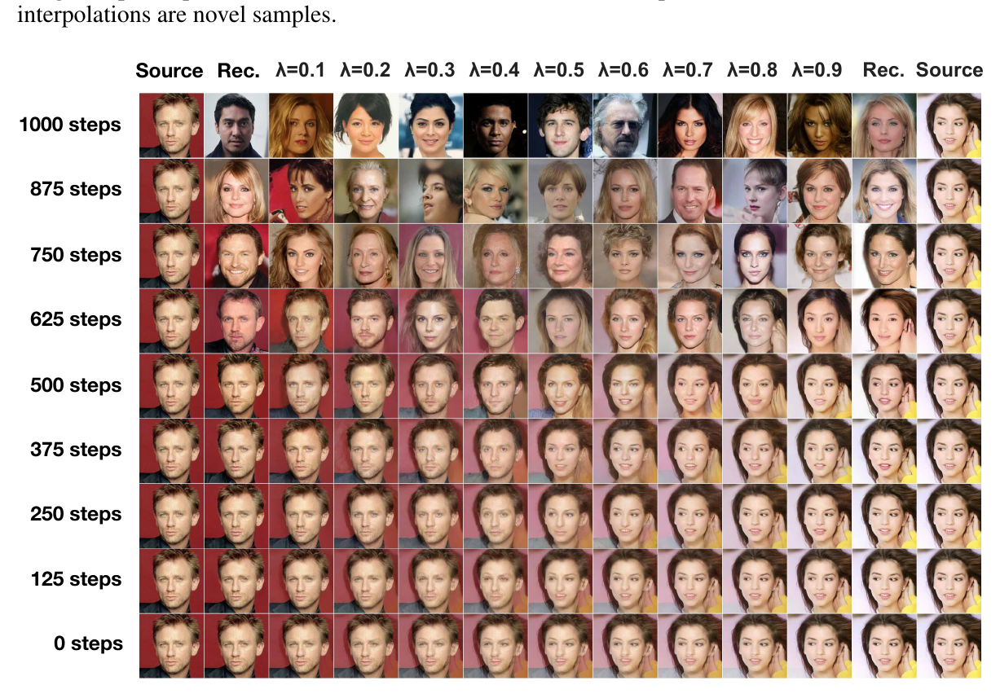
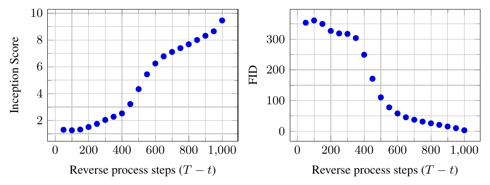
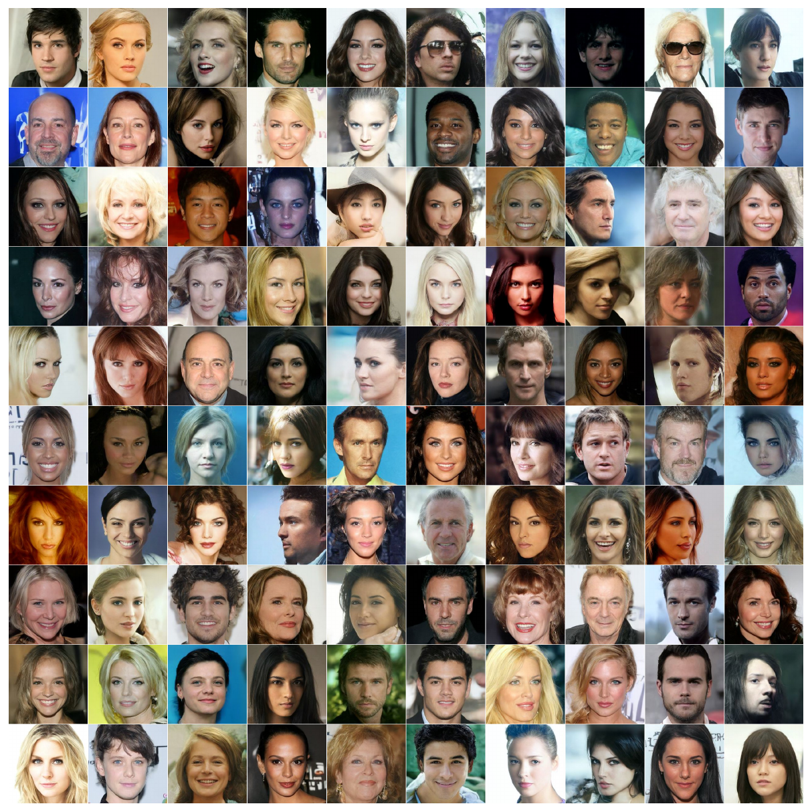
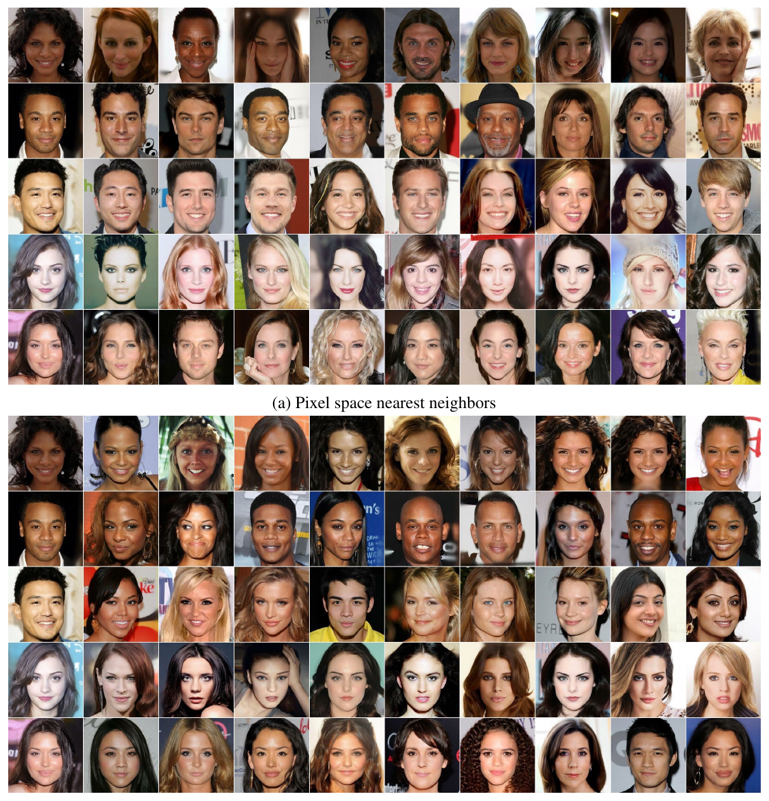
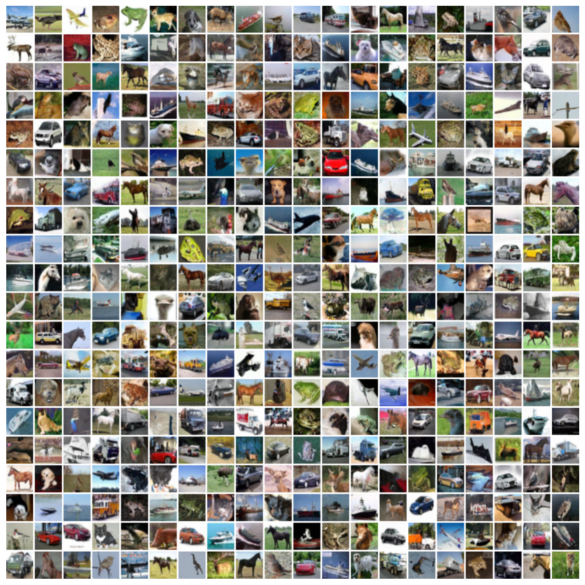
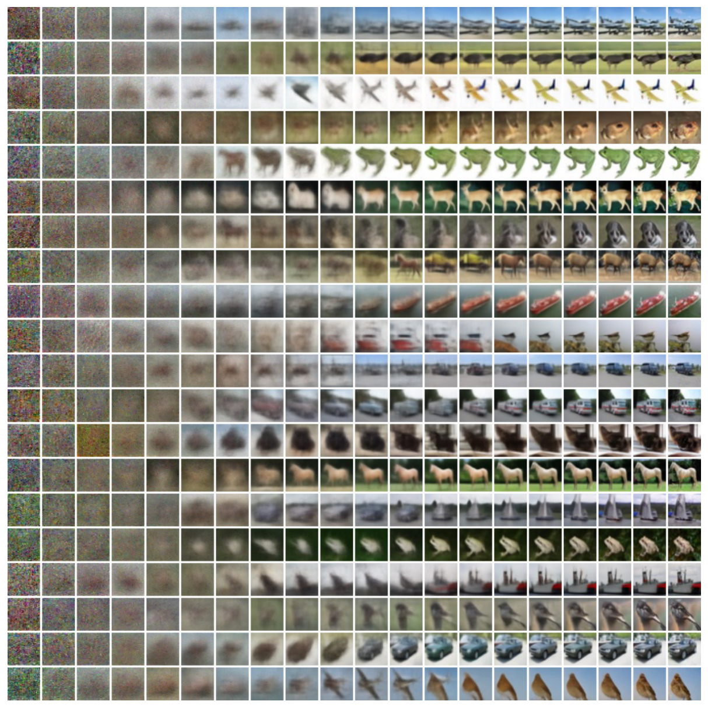
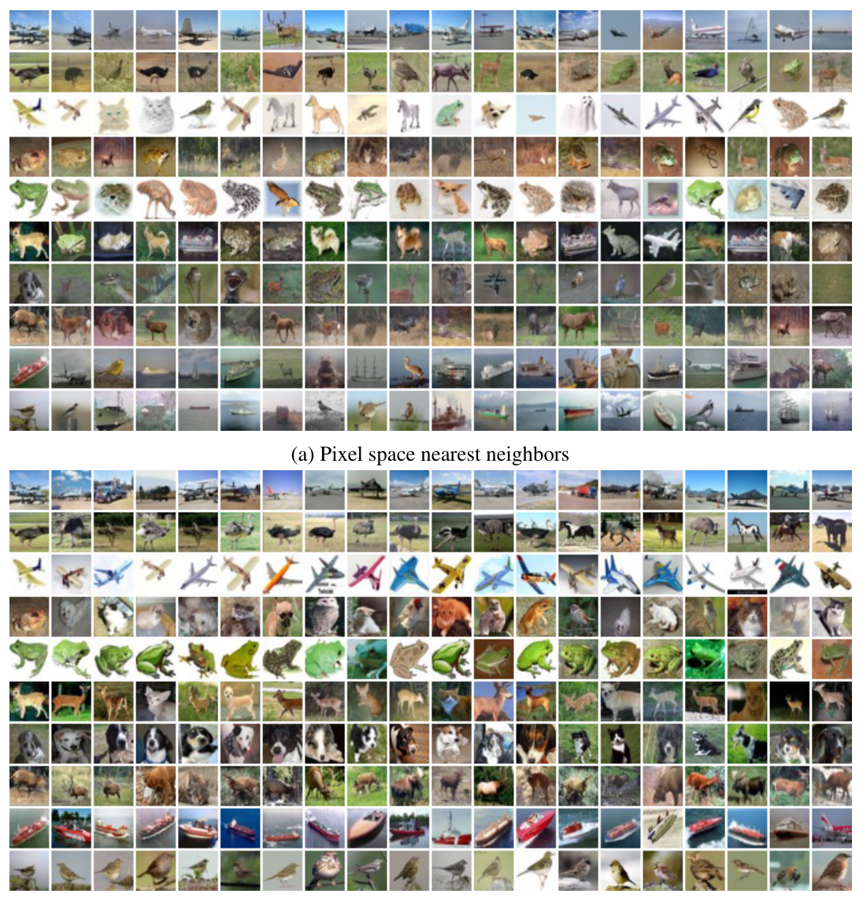
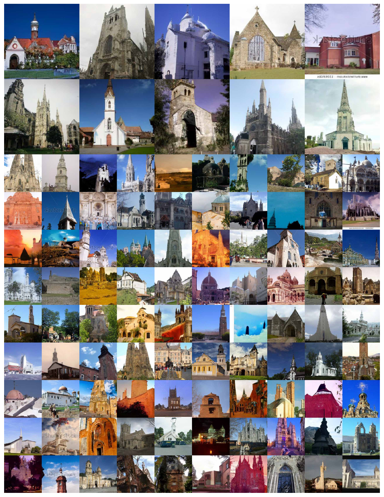
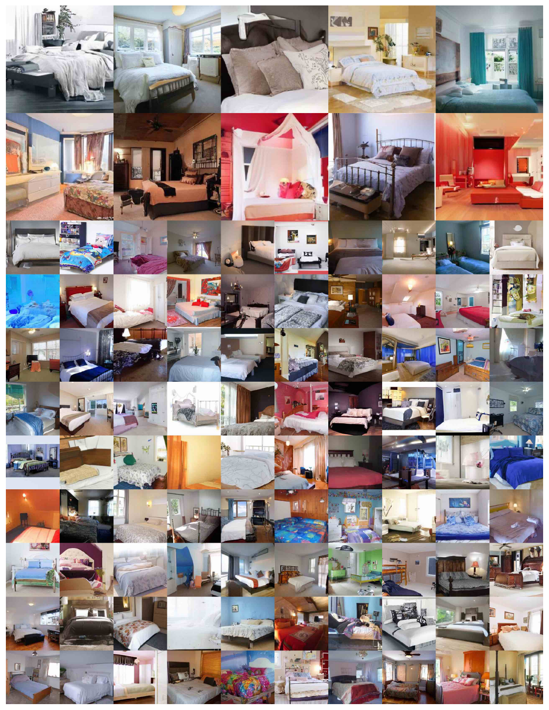
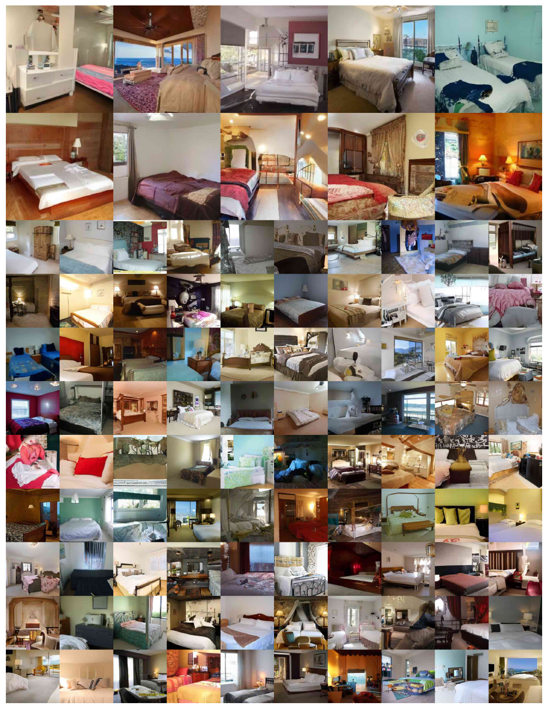
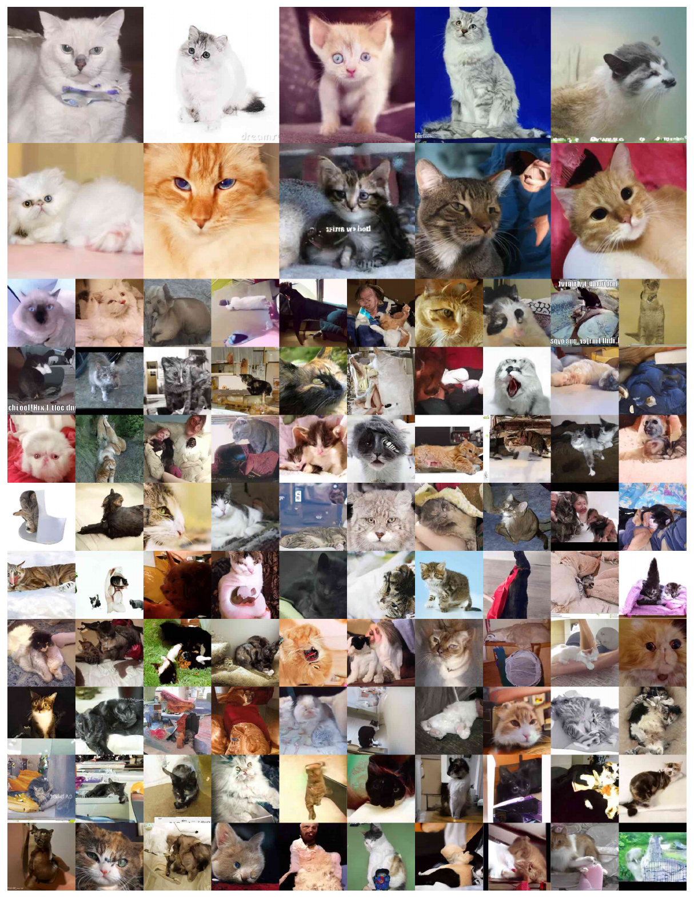
附加信息
LSUN 数据集的 FID 分数列于表 3。带 ∗ 的分数由 StyleGAN2 作为基线报告，其他分数由各自的作者报告。
| 模型 | LSUN Bedroom | LSUN Church | LSUN Cat |
| ProgressiveGAN [27] | 8.34 | 6.42 | 37.52 |
| StyleGAN [28] | 2.65 | 4.21∗ | 8.53∗ |
| StyleGAN2 [30] | - | 3.86 | 6.93 |
| 本文（Lsimple） | 6.36 | 7.89 | 19.75 |
| 本文（Lsimple，大模型） | 4.90 | - | - |
表 3 LSUN 256 × 256 数据集上的 FID 分数。
渐进式压缩 我们在 4.3 节关于有损压缩的论证只是概念验证，因为算法 3 与 4 依赖诸如最小随机编码 [20] 之类对高维数据不可行的过程。这些算法是对 Sohl-Dickstein et al. [53] 的变分下界 (5) 的一种压缩解释，还不是实用的压缩系统。
| 反向过程时间（T − t + 1） | 码率（比特/维） | 失真（RMSE，[0, 255]） |
| 1000 | 1.77581 | 0.95136 |
| 900 | 0.11994 | 12.02277 |
| 800 | 0.05415 | 18.47482 |
| 700 | 0.02866 | 24.43656 |
| 600 | 0.01507 | 30.80948 |
| 500 | 0.00716 | 38.03236 |
| 400 | 0.00282 | 46.12765 |
| 300 | 0.00081 | 54.18826 |
| 200 | 0.00013 | 60.97170 |
| 100 | 0.00000 | 67.60125 |
表 4 无条件 CIFAR10 测试集的率失真数值（配合图 5）。
图表索引
- 图 1 CelebA-HQ 256×256（左）与无条件 CIFAR10（右）的生成样本（引言）
- 图 2 本文所考虑的有向图模型（2 节）
- 图 3 LSUN Church 样本，FID = 7.89（4.1 节）
- 图 4 LSUN Bedroom 样本，FID = 4.90（4.1 节）
- 图 5 无条件 CIFAR10 测试集的率失真与时间的关系（4.3 节）
- 图 6 无条件 CIFAR10 的渐进式生成（4.3 节）
- 图 7 给定同一隐变量时 CelebA-HQ 样本共享高层属性（4.3 节）
- 图 8 用 500 步扩散对 CelebA-HQ 图像做插值（4.4 节）
- 图 9 从粗到细的插值：改变隐空间混合前的扩散步数（附录 D）
- 图 10 无条件 CIFAR10 的渐进采样质量随时间变化（附录 D）
- 图 11 CelebA-HQ 256 × 256 生成样本（附录 D）
- 图 12 CelebA-HQ 256 × 256 最近邻（附录 D）
- 图 13 无条件 CIFAR10 生成样本（附录 D）
- 图 14 无条件 CIFAR10 渐进式生成（附录 D）
- 图 15 无条件 CIFAR10 最近邻（附录 D）
- 图 16 LSUN Church 生成样本，FID = 7.89（附录 D）
- 图 17 LSUN Bedroom 生成样本（大模型），FID = 4.90（附录 D）
- 图 18 LSUN Bedroom 生成样本（小模型），FID = 6.36（附录 D）
- 图 19 LSUN Cat 生成样本，FID = 19.75（附录 D）
表 1 CIFAR10 上的 IS / FID / NLL（4.1 节）、表 2 反向过程参数化与训练目标的消融（4.2 节）、表 3 LSUN 256×256 的 FID（附加信息）、表 4 无条件 CIFAR10 率失真数值（附加信息）已在正文中直接排出。算法 1 训练、算法 2 采样（3.4 节）、算法 3 发送、算法 4 接收（4.3 节）以代码块形式排入正文。
本页由 Zotero 库中的 PDF 原文与 MinerU 解析结果翻译整理而成。图片为从源 PDF 中裁取的原始插图，存于同目录下 images/。参考文献保留原文，未作翻译；原文脚注按位置保留并译出。